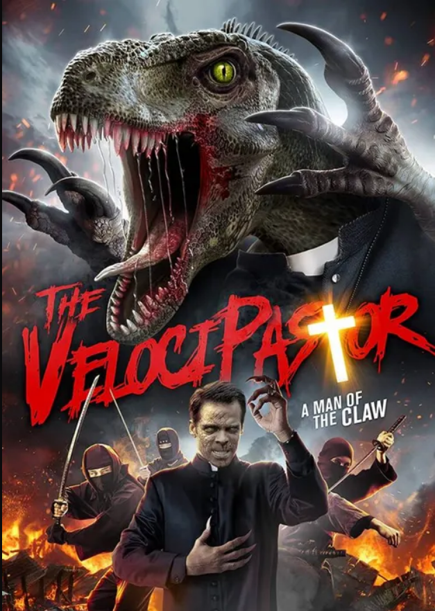
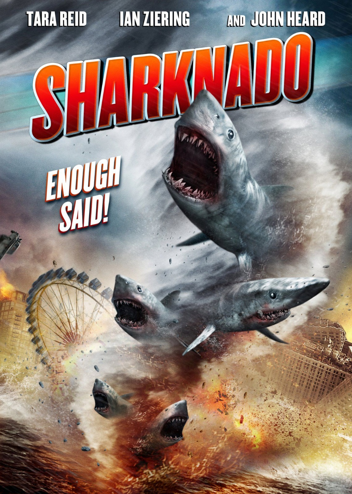

Cinema dos Filmes
No site CINEMAS FILMES você encontrará apenas a nata de filmes espetaculares do momento, como "Cujo", "The Velocipastor", "Sharknado" e "At Midnight Ill Take Your Soul"

- Terror
- 1983
- ⭐ 3.5/5
- 1h 35min
- Diretor: Lewis Teague
- Elenco: Dee Wallace, Danny Pintauro,
Daniel Hugh Kelly
- Review

- Ação
- 2019
- ⭐ 5,1/10
- 1h 15min
- Diretor: Brendan Steere
- Elenco: Gregory James, Janice Young,
Alyssa Kempinski
- Review

- Comédia, Terror, Aventura
- 2013
- ⭐ 3,5 /10
- 1h 26min
- Diretor: Anthony C. Ferrante
- Elenco: Ian ZieringTara ReidJohn Heard
- Review

- Ficção
- 1964
- ⭐ 6,25 /10
- 1 hora e 21 minutos
- Diretor: José Mojica Marins
- Elenco: José Mojica Marins, Magda Mei, Nivaldo de Lima,
Valéria Vasquez, Ilídio Martins
- Review